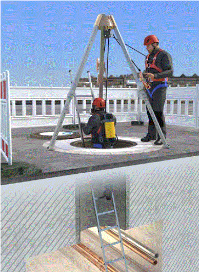
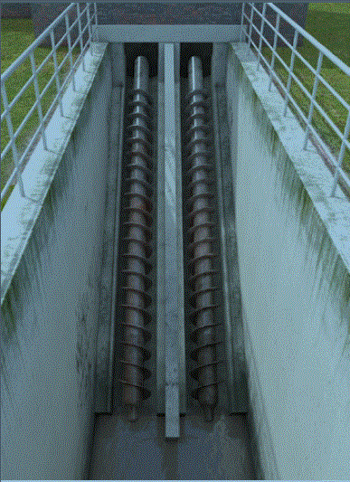
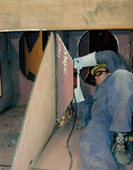
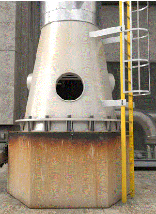
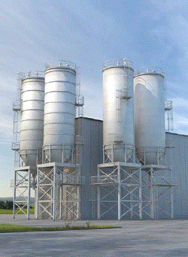
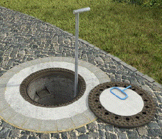
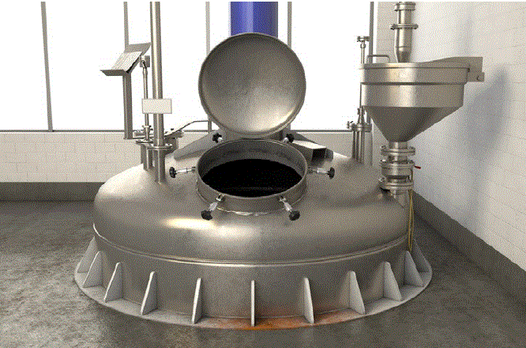
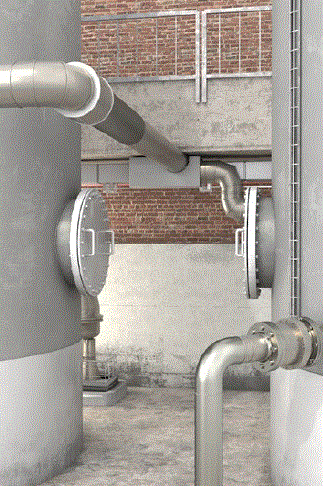
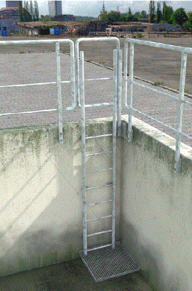

Im Sinne dieser Regel werden folgende Begriffe bestimmt:
2.1 Behälter und enge Räume sind allseits oder überwiegend von festen Wandungen umgebene Bereiche, in denen aufgrund ihrer räumlichen Enge, von zu geringem Luftaustausch oder der in ihnen befindlichen bzw. eingebrachten Stoffe, Gemische, Verunreinigungen oder Einrichtungen besondere Gefährdungen bestehen oder entstehen können, die über das üblicherweise an Arbeitsplätzen herrschende Gefahrenpotenzial deutlich hinausgehen. Auch Bereiche, die nur teilweise von festen Wandungen umgeben sind, in denen sich aber aufgrund der örtlichen Gegebenheiten oder der Konstruktion Gefahrstoffe ansammeln können bzw. Sauerstoffmangel entstehen kann, sind enge Räume im Sinne dieser Regel.
Falls das Auftreten besonderer Gefährdungen (s. u.) nicht sicher ausgeschlossen werden kann, sind beispielsweise auch als enge Räume anzusehen:
Besondere Gefährdungen durch Stoffe oder Gemische können in engen Räumen und Behältern bestehen bzw. entstehen
Besondere Gefährdungen durch Einrichtungen können z. B. in Behältern, Silos und engen Räumen bestehen oder entstehen durch
 |
 |
| Abb. 5 Abwasserkanal | Abb. 6 Grube |
Besondere Gefährdungen durch psychische Belastungen können z. B. auftreten durch
 |
 |
| Abb. 7 Behälter bei der Fertigung | Abb. 8 Schuss unter einer Kolonne |
Besondere Gefährdungen können auch hervorgerufen werden durch z. B.:
| Bei der Betrachtung, ob es sich um einen "engen Raum" handelt, sollte nicht nur die Raumgröße herangezogen werden, sondern es ist immer auch die besondere Gefährdung zu berücksichtigen. So sind z. B. Besenkammern oder Tresorräume bei üblicher Nutzung nicht als enge Räume im Sinne dieser Regel anzusehen. |
2.2 Silos sind bauliche Anlagen zur Lagerung von Schüttgut, die von oben befüllt und nach unten oder zur Seite hin entleert werden.
Für Silos ist in einigen Gewerbezweigen auch die Bezeichnung Bunker gebräuchlich.
Zu besonderen Gefahren siehe Begriffsbestimmung "Behälter und enge Räume".
2.3 Arbeiten sind Tätigkeiten, bei denen sich Personen in Behältern, Silos und engen Räumen aufhalten.
Arbeiten sind z. B.:
Das Aufhalten schließt ein:
 |
 |
| Abb. 9 Silo | Abb. 10 Kanaleinstieg |
 |
|
| Abb. 11 Mannloch | |
 |
 |
| Abb. 12 Mannloch (ungünstige Position, erschwerte Rettungsbedingungen!) | Abb. 13 Steigleiter |
2.4 Zugangsverfahren sind Arbeitsverfahren, die (in der Regel unter Zuhilfenahme von Arbeitsmitteln) den Zugang zum Behälter, Silo oder engen Raum ermöglichen. Solche Verfahren können sein:
2.5 Positionierungsverfahren im Sinne dieser DGUV Regel sind Arbeitsverfahren, bei denen Personen an einer bestimmten Stelle im Behälter, Silo oder engen Raum positioniert werden, um Arbeiten im Sinne der Nummer 3 zu verrichten. Dabei verbleiben sie im Personenaufnahmemittel. Zum Positionieren können hochziehbare Personenaufnahmemittel nach der DGUV Regel 101-005 "Hochziehbare Personenaufnahmemittel" oder seilunterstützte Zugangs- und Positionierungsverfahren (SZP) nach der TRBS 2121 Teil 3 und der DGUV Information 212-001 "Arbeiten unter Verwendung von seilunterstützten Zugangs- und Positionierungsverfahren" benutzt werden.
2.6 Zugänge zu Behältern und engen Räumen können z. B. sein:
2.7 Freimessen ist das Ermitteln einer möglichen Gefahrstoffkonzentration bzw. des Sauerstoffgehalts mit dem Ziel der Feststellung, ob die Atmosphäre im Behälter, Silo oder engen Raum ein gefahrloses Arbeiten ermöglicht.
Beim Freimessen handelt es sich nicht um Messungen im Sinne der Gefahrstoffverordnung oder der Technischen Regel für Gefahrstoffe "Ermittlung und Beurteilung der Konzentration gefährlicher Stoffe in Arbeitsbereichen" (TRGS 402).
2.8 Kontinuierliche Überwachung von Sauerstoff- oder Gefahrstoffkonzentrationen während der Arbeiten dient der Feststellung, dass die Atmosphäre im Behälter, Silo oder engen Raum auch nach dem Freimessen weiterhin ein gefahrloses Arbeiten ermöglicht.
2.9 Aufsichtsführende(r) ist eine vom Unternehmer oder von der Unternehmerin eingesetzte Person, die mit der Aufsicht über die Vorbereitung und Durchführung der Arbeiten in Behältern, Silos und engen Räumen beauftragt ist.
Siehe § 8 Abs. 1 der DGUV Vorschrift 1 "Grundsätze der Prävention".
2.10 Sicherungsposten ist eine Person, die mit den im Behälter, Silo oder engen Raum tätigen Personen ständige Verbindung hält und gegebenenfalls Maßnahmen der Rettung durchführt oder einleitet.
2.11 Sauerstoffmangel liegt dann vor, wenn die Sauerstoffkonzentration niedriger ist als der Sauerstoffgehalt der natürlichen Atemluft von 20,9 %.
2.12 Sauerstoffüberschuss liegt dann vor, wenn die Sauerstoffkonzentration höher ist als der Sauerstoffgehalt der natürlichen Atemluft von 20,9 %.